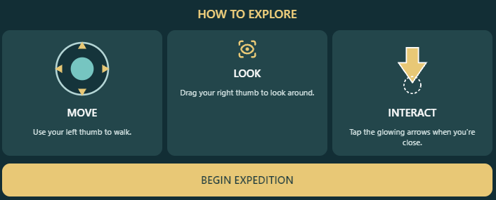

WELCOME BACK, EXPLORER!
You have an unfinished expedition.
Starting new clears your saved progress.
YOUR MISSION
Find out how much water flows down the stream every second.
Your trainer will help you do it.

Quick field briefing! Use your left thumb to walk, and drag your right thumb to look around. Tap the glowing arrows when you're close. Ready? Let's make history!